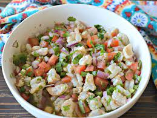

Ceviche
Odin Recipes
Home
Mole
HotDogs
Ceviche

This recipe is one of my favorites on a hot summer day. It's refreshing and tasty.
There are many variations of this dish as you can subsititue the protein from shrimp, crab meat, or fish cooked in lime juice.
For this receipe we will be using the fish in lime juice method.
The ingrediants need for this dish:
- 4 limes
- white fish
- 2 tomatoes
- cilantro
- 1 onion
- Seasoning
- salt, pepper, garlic powder
- avocado
Now to begin the cooking process
- Cut fish up into bit size peices and add to a bag
- Cut 2 of those limes and marinate the raw fish for about 15 minutes.
- The lime will cook the fish
- While that cooks, cut the tomatoes, onions, and avocado into small peices. (not to small)
- Wait...
- Now that the fish is cooked add everything into a big bowl and MIX
- Add the seasoning and reamining lime juice to your preference
- It was that easy!!
Enjoy your meal!